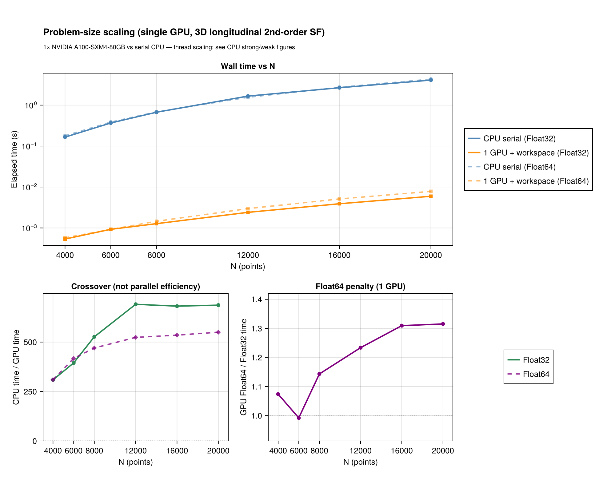
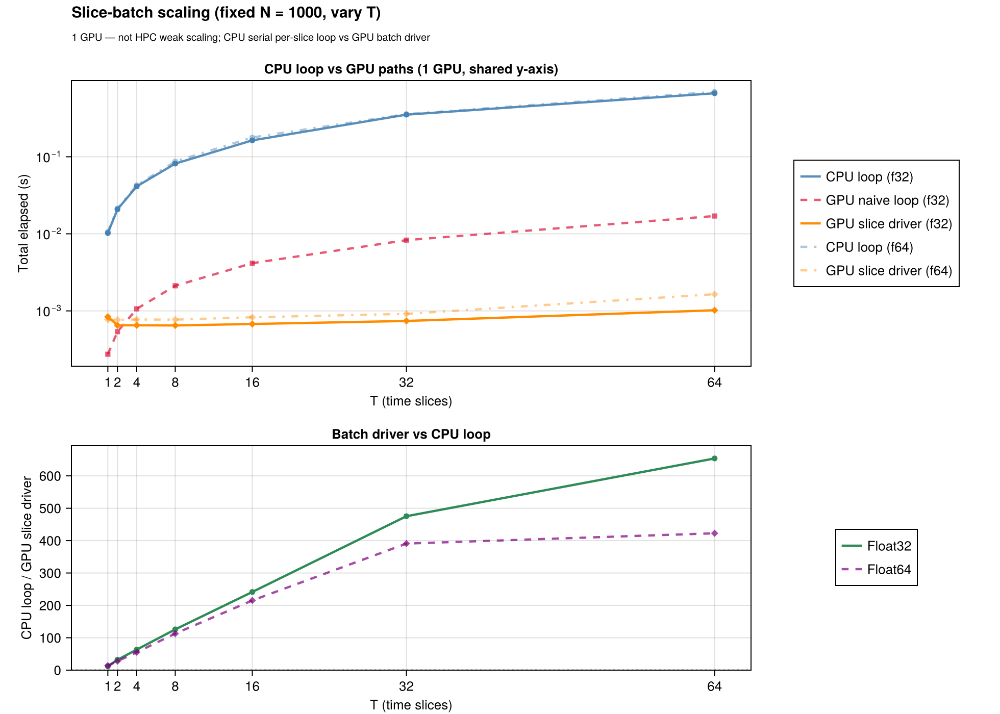

GPU acceleration
The device kernels live in the StructureFunctionsKernelAbstractionsExt extension (loaded with using KernelAbstractions). using CUDA adds native CUDA kernels for the point, joint and single-pass routes and their batches: each call takes the launch plan measured fastest for its element types, coordinate width, bin count and size, and a call large enough for it to pay first samples the share of its pairs in range, which picks among plans measured fastest at different shares. Every device route is also run on KernelAbstractions.CPU(), which executes the same kernel source on the host and is how the default test suite covers the kernels without a device. CUDA is the tested hardware.
For backend selection across serial / threaded / distributed / GPU see Backends; the CUDA validation and benchmark scripts are in the repository's gpu/ directory.
Every code block on this page needs a CUDA device, so the documentation build shows them without running them; the pages that do not need one have their blocks executed on every build. The same calls run on KernelAbstractions.CPU() by swapping the device, which is what the test suite does.
When to use the GPU
- Problem size. Pair histograms pay off above a crossover size that depends on the hardware; below it the threaded CPU backend is faster.
- Memory. Device arrays use the layout
(D, N)or(D, N, T)for batches.Float32is faster on the device;Float64is supported and is what the parity tests compare. - Not a drop-in speedup on the CPU. Without a GPU,
KA.CPU()runs the same kernels on the host and is slower thanThreadedBackend().
Point lists
using StructureFunctions: Calculations as SFC, StructureFunctionTypes as SFT
using ComputationalBackends: ComputationalBackends as CB
using KernelAbstractions, CUDA
x = CUDA.CuArray{Float32}(rand(Float32, 3, 20_000))
u = CUDA.CuArray{Float32}(rand(Float32, 3, 20_000))
bins = collect(Float32, range(0.0f0, 1.5f0; length = 21))
res = SFC.calculate_structure_function(SFT.L2SFType(), x, u, bins; backend = CB.GPUBackend(CUDA.CUDABackend()))bins must have the element type of x and u; the device API casts nothing silently. The joint value-binned histogram (value_bins), the six single-pass invariants and the batches over auxiliary axes take the same backend keyword.
GPUSFWorkspace — reuse what a call prepares
Repeated calls with one bin layout pass a workspace to the public entry alongside the GPU backend. It keeps what a call prepares from its bins and points — the device digitizers, the staged inputs, and the cull grid with its tile-pair lists — so a repeated call on the same points pays only for its fields:
ws = SFC.GPUSFWorkspace(CUDA.CUDABackend(), bins)
for _ in 1:10
SFC.calculate_structure_function(SFT.L2SFType(), x, u, bins;
backend = CB.GPUBackend(CUDA.CUDABackend()), workspace = ws)
end
SFC.release!(ws)calculate_structure_functions_single_pass and calculate_structure_functions_single_pass_2d take a workspace built with kind = :single_pass or kind = :single_pass_2d the same way.
Every device point route culls: the points are sorted into cells on the device and only the tile pairs that can hold a pair within the largest finite bin edge are swept. AlwaysCulling() prepares the cells on every call; AutoCulling() prepares them when a workspace keeps them for later calls, and otherwise only for a call whose pairs are numerous enough to repay the sort. Call refresh!(ws) after changing coordinates in place.
Time series — the batch drivers
For T snapshots stack the data as (D, N, T), upload once and call the batch driver, which keeps the batch on the device:
N, T = 20_000, 16
x_batch = CUDA.CuArray(rand(Float32, 3, N, T))
u_batch = CUDA.CuArray(rand(Float32, 3, N, T))
sums = CUDA.zeros(Float32, length(bins) - 1, T)
counts = CUDA.zeros(UInt32, length(bins) - 1, T)
SFC.calculate_structure_function_batch!(sums, counts, SFT.L2SFType(), x_batch, u_batch, bins;
backend = CB.GPUBackend(CUDA.CUDABackend()))The output buffers of a device call are device arrays, filled in the order of the task's device stream: a call returns once its work is queued, as a device array operation does. Array(sums) waits for it and copies one to the host, and StructureFunctions.to_host(res) a result; time a call with CUDA.@sync.
The batch entries — calculate_structure_function_batch!, calculate_structure_function_2d_batch!, calculate_structure_functions_single_pass_batch!, calculate_structure_functions_single_pass_2d_batch! — dispatch on the backend; the CPU backends run them too.
A field sampled repeatedly on a grid takes the same entry with the grid in place of the coordinates, (component, cells..., T) in and (n_distance, T) out; with the grid and gbins of the grid section below:
ug_batch = randn(Float32, 2, 64, 64, T)
gsums = CUDA.zeros(Float32, length(gbins) - 1, T)
gcounts = CUDA.zeros(UInt64, length(gbins) - 1, T)
SFC.calculate_structure_function_batch!(gsums, gcounts, SFT.L2SFType(), grid, ug_batch, gbins;
backend = CB.GPUBackend(CUDA.CUDABackend()))Each pair's separation, distance bin, reading and geodesic frame belong to the grid, not to the field, so the batch computes them once and contracts every slice against them. In the transform's binning kernel one work item owns one (lag, slab pair) and loops the slices inside.
Route table for point lists
| call | shapes | D | bins | device route |
|---|---|---|---|---|
calculate_structure_function(sf, x, u, bins; backend) | (D, N) | any | linear, log, general | tiled pair blocks with a block-local histogram; above the shared-memory budget, global atomics |
points on a line, a polynomial sf (also over fields) | x::(1, N) | 1 | linear, log, general | the sorted line: a device sort, prefix sums of the centred field's monomials, each point's partners in a bin as one index range |
| shared positions | x::(D, N), u::(D, N, aux...) | any | linear for the fused route | fixed-position batch kernels |
| varying positions | x, u::(D, N, aux...) | any | linear for the fused route | varying-position batch kernels |
calculate_structure_function(sf, x, u, bins, value_bins; backend) | (D, N) or batches | any | typed or vector value bins | shared-memory joint histogram when it fits, global atomics otherwise |
calculate_structure_functions_single_pass(x, u, bins; backend) | (D, N) or batches | any | linear, log, general | tiled six-row histogram |
calculate_structure_functions_single_pass_2d(x, u, bins, value_bins; backend) | (D, N) or batches | any | typed or vector value bins | the whole histogram or one set of invariant planes per pass on chip when it fits, global atomics otherwise, chosen per call |
calculate_structure_function_tensor(order, x, u, bins; backend) | (D, N) or batches | any | any | the 1-D tiled kernels over the tensor's packed symmetric components, any order |
calculate_structure_function_tensor(order, x, u, bins, angle_bins; second_axis, backend) | (D, N) | any, flat | any | the joint tiled kernels over the packed components, binned by separation angle |
calculate_structure_function(sf, x, fields, bins; backend) | (D, N) | any | any | the 1-D tiled kernels over the packed multi-field column |
D = size(u, 1) is the velocity width and N = size(x, 2) = size(u, 2); trailing axes are independent auxiliary calculations. Widths 2 and 3 are compiled ahead of time; any other width is one more kernel instantiation, compiled the first time it is launched. Where a width's staged tiles exceed a kernel's shared-memory budget the route takes its global-atomic sibling, which stages nothing.
Grids: the transform engine on a device
The gridded transform takes the hardware from the same backend keyword. With using FFTW: FFTW (or another AbstractFFTs implementation) and using KernelAbstractions: KernelAbstractions, a GPUBackend moves the masked, weighted monomials to the device, takes their transforms there through the device's own AbstractFFTs implementation, forms every inverse column of a batch of slab pairs in one kernel, and bins every lag of every slab pair in a second kernel with a privatized histogram. Uniform, stretched and lat-lon grids, masks, weights, multi-fields, every polynomial order, the joint histogram over angle, slice batches, the rank-P moment tensor, the six single-pass invariants (calculate_structure_functions_single_pass(grid, u, bins)) and the soft-binned non-uniform FFT route run through it; the counts are exactly the CPU engine's.
using FFTW: FFTW
using FlowGeometries: FlowGeometries as FG
using SpectralBackends: SpectralBackends as SB
geo = FG.Geometry.CartesianGeometry()
grid = FG.Grids.StructuredGrid(geo, range(0.0, step = 0.1, length = 64),
range(0.0, step = 0.1, length = 64))
ug = randn(Float32, 2, 64, 64)
gbins = collect(Float32, range(0.0f0, 3.0f0; length = 31))
sf = SFC.calculate_structure_function(SFT.L3SFType(), grid, ug, gbins,
SB.FastFourierTransformSpectralBackend(), UInt64;
backend = CB.GPUBackend(CUDA.CUDABackend()))AutoSpectralBackend() on a device takes the transform wherever the transform can express the operator. The direct lag sweep has a device kernel of its own, Calculations.device_lag_sweep!: the route a non-polynomial operator takes on a grid, since the transform computes polynomial moments and cannot express one, and the only route of the joint histogram by value, which bins each pair's own value where a transform has only each lag's sum. It runs the distance histogram, both joint histograms, the single-pass invariants and slice batches: each slice, slab pair and lag gets lanes that sweep its cells side by side, more when there are fewer lags to fill the device and when the lag is longer.
A schedule with many slabs transforms many short monomials, whose number sets the cost. The monomials are built and transformed in blocks — every monomial of as many slabs as the batch budget admits, or one large slab's monomials in groups — each block in one broadcast and one batched transform, and the spectra are laid out in the order the spectral kernel reads them, so its input is a reshape of them.
The binning kernel launches each slab pair over the lags that pair can reach, the same box the host loop takes. On a lat-lon grid a parallel spans less distance the nearer it lies to a pole, so the box over all row pairs stays as wide as the equator's however small the largest bin edge is; a schedule that reports uniform_lag_box shares one box across every pair, indexed by division.
Single-type joint 2D shared memory
A portable device kernel keeps its histogram in shared memory when the bytes its shared arrays take, for the call's element types, fit the device's static shared-memory budget, and accumulates with global atomics otherwise. The budget is the device's own (gpu_device_caps), so the same call can take a different kernel on a device with less shared memory; the answer is the same either way.
GPUSFWorkspace for kind = :joint2d defaults to the exact compile-time shared histogram width n_dist × n_val; joint2d_compile_cells = joint2d_smem_align256(n_dist, n_val), or the widest width a device fits, joint2d_smem_max(backend, W, F, XT, OT, CT) for W-wide coordinates and F-wide fields, overrides it so bin grids of different shapes share one compiled kernel.
Six-invariant single-pass 2D
Where no native kernel takes the call, the device path for calculate_structure_functions_single_pass_2d! keeps the histogram on chip — whole (:shared) or one set of invariant planes per pair pass (:typeplane) — when the device's static shared-memory budget holds it for the call's element types, and accumulates in global memory otherwise. The six rows are S2, L2, T2, S3, L3, L1T2; the basis-dependent T3 and L2T1 take the general entries with their transverse convention.
Testing tiers
| tier | command | what it proves |
|---|---|---|
| default suite | julia --project=test test/runtests.jl | kernel arithmetic, binning, workspaces and slices on KA.CPU(), the same kernel source without CUDA |
| CUDA | julia --project=gpu gpu/runtests.jl | every CUDA suite: point kernels, workspaces, 1-D and 2-D parity, end-to-end 2-D, slices, the gridded engine's parity table, and every tiled kernel's static shared memory against the bytes its launcher decides by (skipped when !CUDA.functional()) |
| gridded parity table | gpu/run_cuda_gridded_parity.sh | counts exact and sums to round-off against the CPU on every schedule, the non-uniform FFT route and the tensor kernel |
| benchmarks | julia --project=gpu gpu/benchmark_suite.jl | release-performance gates and timing JSON |
KA.CPU() compiles no device kernels and runs none of the CUDA-specific launch routes, so the CUDA tier checks what a device compiler rejects — a runtime-length tuple, a boxed capture, a runtime-value branch, an @index inside a branch, a formatted throw message — and the CUDA routes themselves.
Benchmarks and figures
The first figure times one device against one CPU core over the number of points; the second times T snapshots as one batch call on one CPU core, as one device call per snapshot, and as one device batch call. Every call is a public entry. They are regenerated on a CUDA device with gpu/collect_benchmark_assets.jl followed by docs/generate_assets/generate_gpu_figures.jl; the parity figure (KA.CPU() against serial) with docs/generate_assets/generate_assets.jl. CPU thread scaling is in benchmark/benchmark_scaling.jl.


Examples
examples/gpu_acceleration.jl— a single snapshot with a workspaceexamples/gpu_time_slices.jl— the slice batch against a naive loop